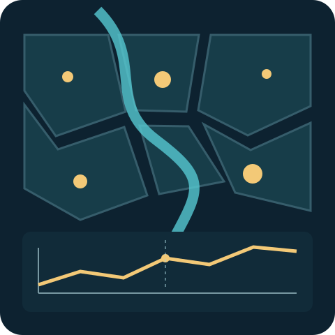

Where it happens
Maps reveal geographic patterns at the resolution the data supports. Points, shaded areas, and heat maps answer different questions.
Cartography
Maps, charts, and sourced context tell the stories of city life—from businesses and transport to housing, population, and crime.
Follow the geography, see the pattern, and discover the context that makes it meaningful.

Place. Pattern.What changes in a city, and where does it happen? Cartography brings geography and data together to make those questions easier to explore. A map locates the story. Other charts show its timing, distribution, and scale.
Useful annotations connect the timeline to sourced events and changes in measurement. They help you find your bearings without presenting coincidence as cause. Every story aims to leave you with a few clear insights you can remember.
Each city question calls for its own combination of views. A map is always part of the story; the other charts earn their place by what they help you understand.
Maps reveal geographic patterns at the resolution the data supports. Points, shaded areas, and heat maps answer different questions.
Line graphs show change over time. Bars compare categories. Histograms reveal distributions. The question determines the view.
Timed annotations mark relevant events and changes in how data was counted, adding useful reference points as the story unfolds.
Boston’s reported index crime fell 71% from its 1989 peak to 2015 in this example dataset. Interpreting the trend also means understanding what was counted and where the measure changes.
Correct headline. Little help interpreting what the line can—and cannot—mean.
A clear measure and source boundary make the trend easier to interpret.
Claims recompute from release data and material source limits remain visible.
The viewer leaves with a coherent model of time, place, and meaning.
The framing protects privacy and avoids neighborhood stigma, false precision, and unsupported causal claims.
Suggest a city question, share a reliable source, or explain the context a chart might miss.
Local knowledge and careful scrutiny help make city data more useful. Join the project discussion to contribute a perspective.
Suggest a question about a city and why its answer would matter to viewers.
Suggest a topicShare a public dataset or point out a definition, gap, or boundary that changes its meaning.
Contribute a sourceSuggest a sourced event or local detail that helps viewers orient themselves in the story.
Add local contextPublic review and project emails are the current participation paths. A future pre-publication editorial cohort can build on those systems as the collective grows.
Use the comment thread on this page to challenge a definition, milestone, editorial standard, or technical design.
Open project commentsReceive updates and future invitations for focused project participation.
Open the email formA capped cohort can eventually review pre-publication units through a more structured contribution system.
Help shape the model